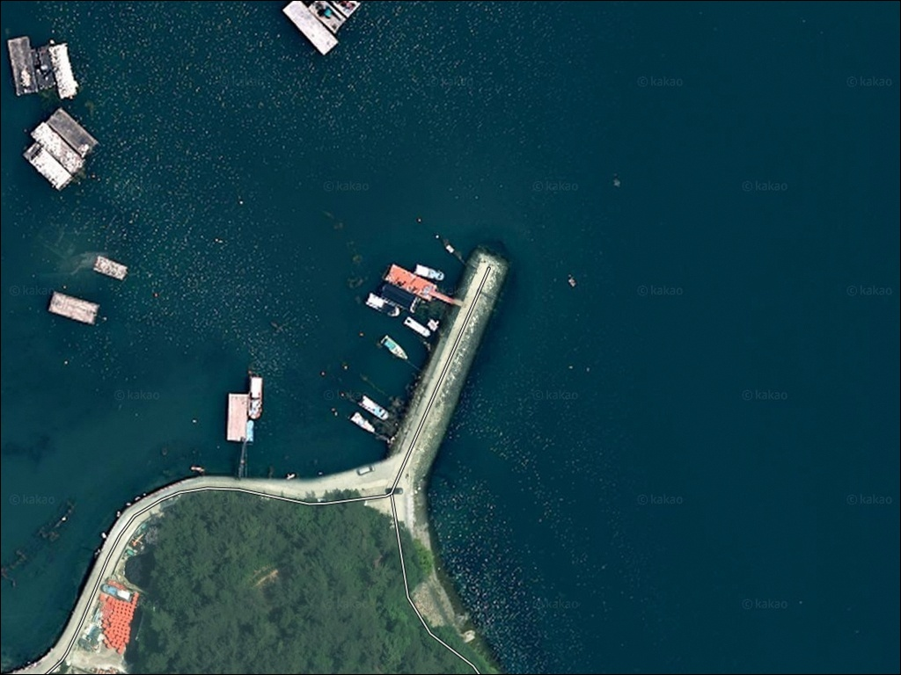
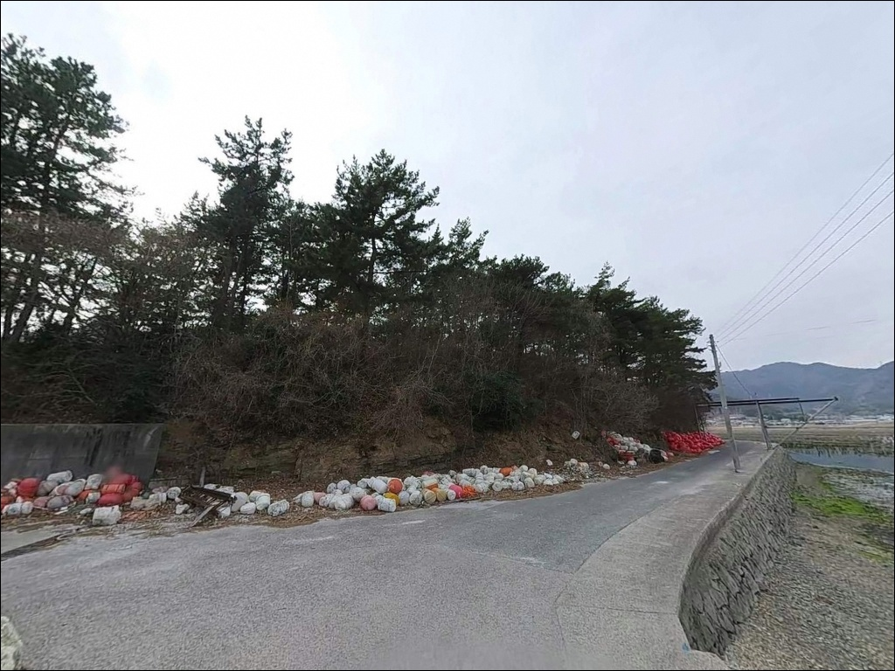
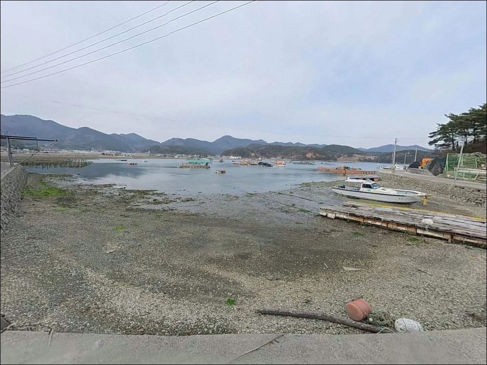
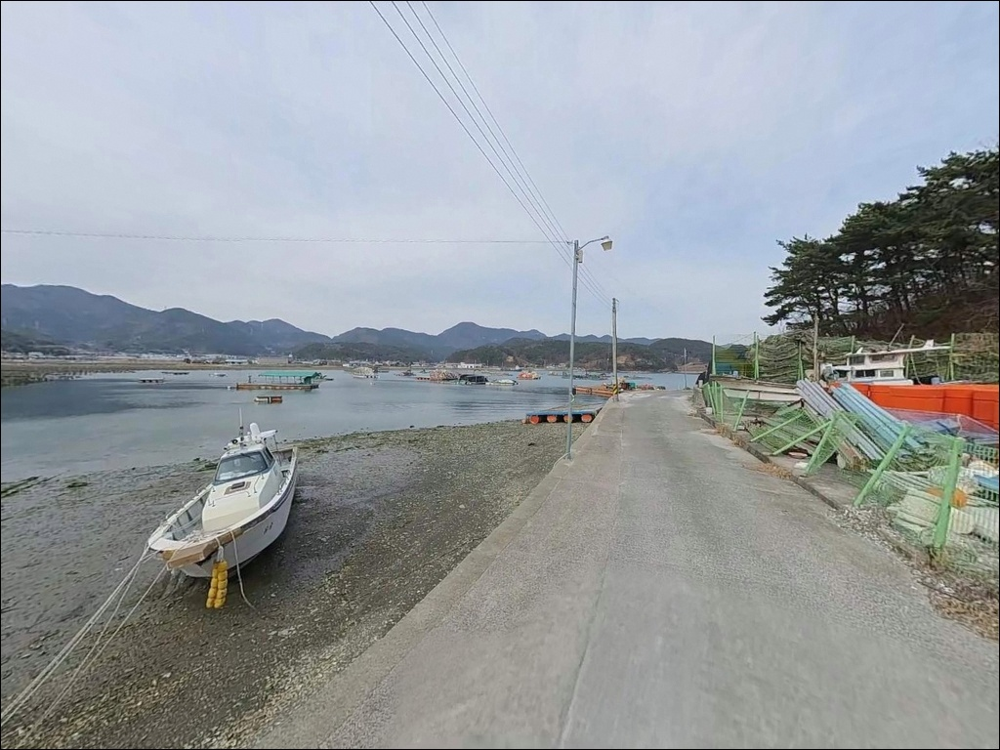
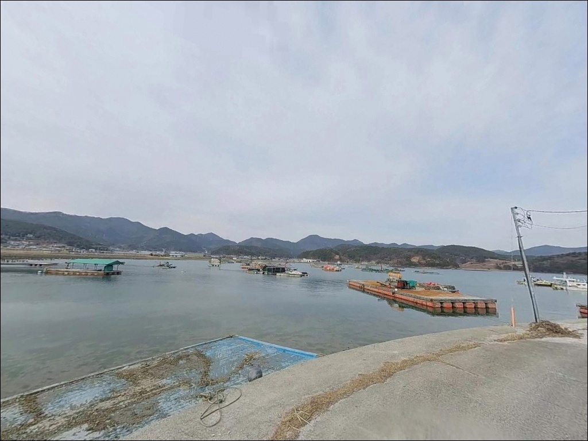
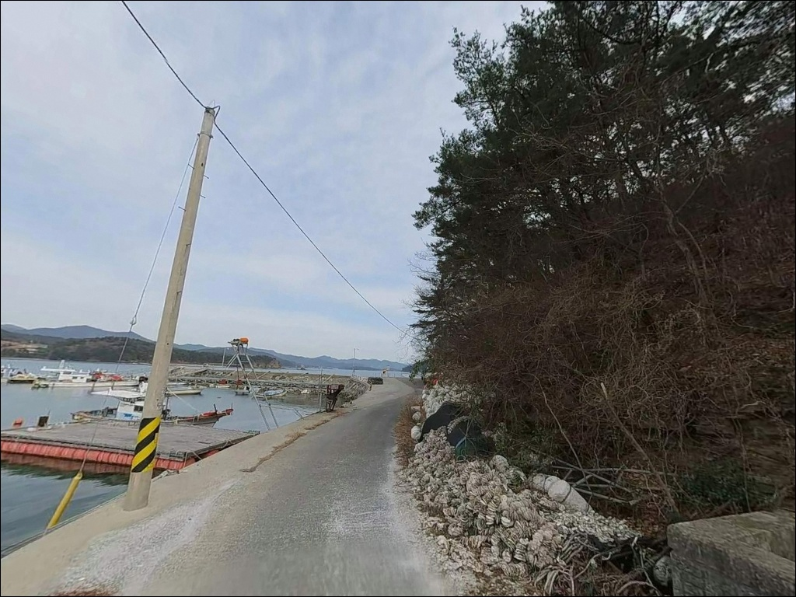
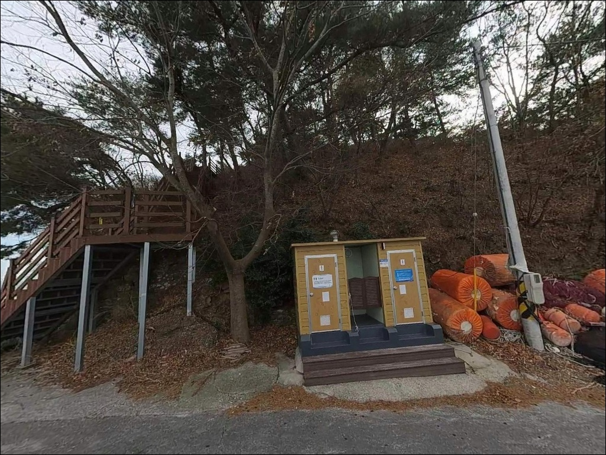
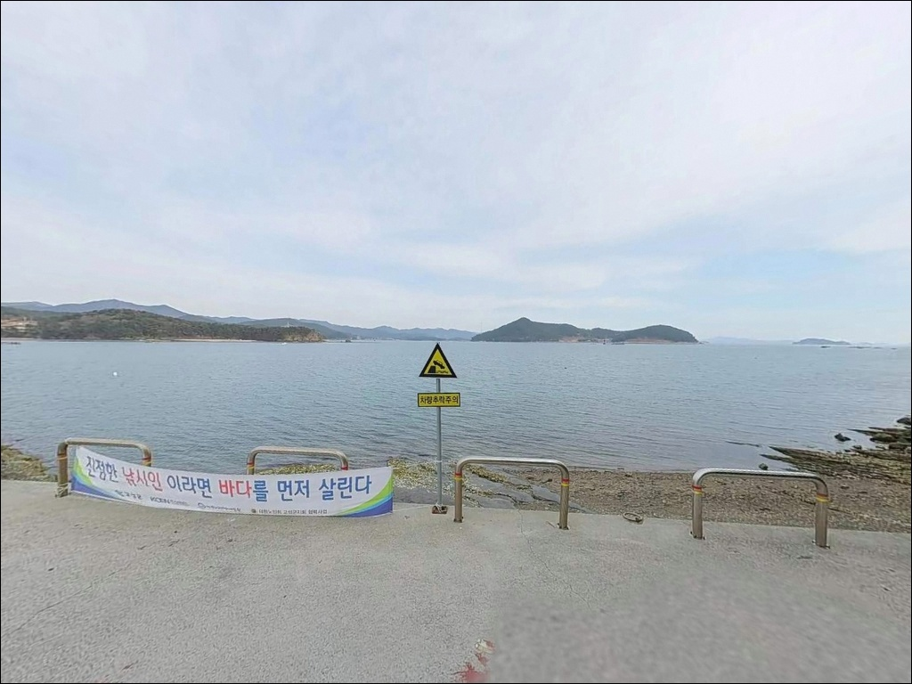
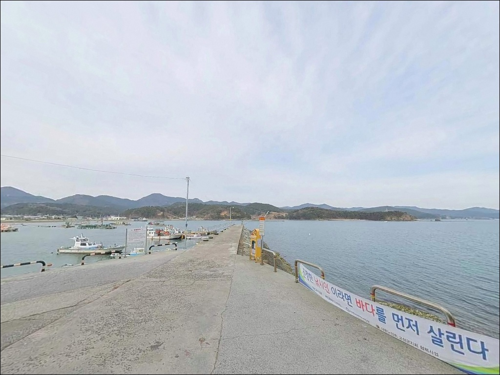

간조에 들어가면 자리 없는 고성 솔섬선착장, 들물 수로 조류에 살아난 감성돔 입질
이 페이지에는 광고(제휴 링크 포함)가 있으며, 광고 링크를 통해 구매하면 운영자가 판매 수익 또는 수수료를 받을 수 있습니다. 포인트 사진: 카카오맵 스카이뷰·로드뷰. 이 페이지의 지도·사진 이미지는 카카오맵의 실제 서비스 이미지와 다를 수 있습니다.


포인트 안내
솔섬선착장
경남 고성군 하일면 송천리 198-1
자란만 들물 타이밍을 확인하지 않고
솔섬선착장에 들어서면,
수심 3~5m 내외의 얕은 내만에서
간조 직후 채비가 바닥을 긁는 상황을 맞닥뜨립니다.
썰물이 이어지면 선착장 주변 수위가 크게 낮아져
낚시 자리 자체가 사실상 사라지는 구조입니다.
이 글은 솔섬선착장의 들물 기준 입장 전략,
진입 동선, 낚시 방식 선택 조건을 정리합니다.
조황 단정이나 특정 어종 보장은
이 글의 범위에 포함되지 않습니다.
경남 고성군 하일면 자란만(紫蘭灣)은
봄철 감성돔 산란장으로 꼽히는 내만 해역입니다.
솔섬선착장은 그 북서쪽 연안에 자리하며,
선착장 바로 앞에 솔섬이 위치해
육지와 섬 사이 수로 구간이 자연스럽게 형성됩니다.
온라인 조황 정보가 거의 없는 조용한 포인트이며,
자란만 일대 패턴을 알면 공략법이 보이는 곳입니다.

1. 진입 동선과 포인트 접근성
고성읍에서 1030번 지방도를 이용해
하일면 방향으로 진입한 뒤,
자란만 해안도로를 따라 송천리 쪽으로 내려가면
솔섬선착장에 닿습니다.
마을 안길 구간은 차 한 대가 지날 수 있는 단차로로,
마주오는 차량과의 교행이 어려운 구간이 포함됩니다.
선착장 직전 구간은 간이 포장 상태일 수 있어
승용차 기준 진입은 가능하지만
대형 캠핑카는 마을 입구에서 회차가 어렵습니다.
소형 차량 기준으로는
선착장 인근 공터에서 회차가 가능하며,
초행이라면 출발 전 위성지도로
마을 안길 폭을 먼저 확인하는 것이 좋습니다.
주차는 선착장 입구 콘크리트 부지와
인근 도로변 공터를 활용합니다.
소형 차량 2~3대 수준의 공간이 확보되어 있으며,
낚시 포인트와 차량 거리가 가까워
장비 이동은 편리한 편입니다.

2. 차박 환경과 야간 체류 여건
솔섬선착장 주변은 52가구 규모의
송천리 어촌 마을이 배경입니다.
민가 밀집도가 낮고 마을에서
선착장까지 일정 거리가 있어
야간 프라이버시는 확보되는 편입니다.
차박 공간 자체는 선착장 입구 공터가 전부라
넓은 공간을 기대하기는 어렵습니다.
가로등은 마을 내부 구간에만 설치되어 있으며,
선착장 구역은 별도 조명이 없습니다.
야간 낚시를 염두에 두고 있다면
헤드랜턴과 독립 조명은 반드시 챙겨야 합니다.
자란만 내만 구조라 파도 소음은
외해 방파제에 비해 상당히 조용한 환경이며,
바람 영향은 남서쪽 자란도 방향에서 들어옵니다.
차박을 메인으로 삼기에는 주차 공간이 협소합니다.
낚시를 마친 뒤 조용히 하룻밤 머무는 용도로는
나쁘지 않지만,
공간 여건이 맞지 않을 경우를 대비해
대안 차박지를 사전에 파악해두는 편이 좋습니다.


3. 주변 편의시설 및 인프라 현황
선착장 반경 1km 이내에는 대형 편의시설이 없습니다.
송천리 마을 특성상
식수, 얼음, 낚시 소품, 연료 모두
출발 전에 갖추고 진입하는 것이 기본입니다.
현장에서 부족한 것을 채우려 하면
왕복 이동 거리가 상당합니다.
하일면 소재지 방향으로 이동하면
소규모 슈퍼마켓과 식당을 이용할 수 있습니다.
반경 7km 거리에는
이마트24 자란만로점이 위치해
기본 생활용품 보충이 가능합니다.
낚시 장비나 채비 보충이 필요하다면
고성낚시채25시가 주말 오전 5시부터 운영되며
남해안대로 일대에 위치합니다.
응급 상황 발생 시 고성읍까지 이동 거리가 있으므로
비상약품과 충분한 수분은 미리 준비합니다.
연료도 출발 전에 채워두는 편이 안전합니다.

4. 진입 전 반드시 챙겨야 할 준비사항
솔섬선착장 방문에서 가장 먼저 확인할 것은
조석 시간입니다.
자란만 내만은 간조 시 수위 변화가 커서
선착장 인근 수심이 크게 낮아집니다.
바다타임에서 고성 자란만 기준 물때를 확인하고,
들물 시작 1~2시간 전에 입장하는 것이
가장 효율적인 타이밍입니다.
자란만 일대 해역에는
일부 구간이 낚시통제구역으로 지정된 사례가 있습니다.
방문 전 고성군청을 통해
현재 통제구역 시행 여부를 확인하는 것이
불필요한 상황을 피하는 방법입니다.
출조 전 고성 하일면 일대 최신 조황 검색도
함께 해두시기 바랍니다.
선착장은 어민들의 생업 공간입니다.
어선 이동 동선과 어구에 접촉하지 않도록
자리를 잡는 것이 기본 매너이며,
갯바위 구간 진입 시에는 미끄럼에 주의합니다.
썰물 때 솔섬으로 걸어 들어갈 수 있지만,
밀물 시간을 반드시 확인해
섬에서 고립되지 않도록 주의해야 합니다.

5. 지형 기반 낚시 여건 분석 — 수로가 핵심입니다
솔섬선착장의 핵심 지형은
육지와 솔섬 사이에 형성된 수로 구간입니다.
조류가 이 구간을 통과하면서
먹이를 몰고 어종이 집결하는 조건이 만들어집니다.
자란만 내만 구조라 외해에 비해 파도 영향이 적고,
수면이 잔잔해 찌 흐름이 안정적입니다.
수심은 선착장 끝단 기준 3~5m 내외이며,
솔섬 방향 수로 구간으로 갈수록
수심이 더 깊어지는 경사 구조입니다.
바닥 지형은 뻘과 모래, 간헐적인 여밭이 혼재되어 있어
밑걸림 없이 채비를 운용할 수 있는 구간이 많습니다.
들물 시 어군 유입이 뚜렷하고
간조 시에는 수위 변화가 크게 나타나는 구조라,
입장 타이밍이 조과 기준의 전부를 결정합니다.
자란만 일대는 봄철 감성돔 산란장으로
낚싯배 출조가 활발한 해역입니다.
연안 낚시 역시 만 내 방파제와 선착장을 중심으로
꾸준히 이루어지는 곳이며,
솔섬선착장은 그 흐름 위에 있는 포인트입니다.
출조 전 최신 조황은 "자란만 조황",
"고성 하일면 낚시" 키워드로 검색해 보시기 바랍니다.


6. 포인트에 어울리는 낚시 스타일
이 포인트에서 지형과 가장 잘 맞는 방식은
릴찌낚시입니다.
수면이 잔잔해 찌 흐름이 안정적으로 유지되고,
솔섬 방향 수로 구간은
채비를 조류에 실어 자연스럽게 흘리기 좋은 구조입니다.
봄(4~5월)과 가을(10~11월)에
감성돔을 기대할 수 있는 해역으로,
자란만 일대에서 확인된 패턴입니다.
에깅도 이 포인트 지형과 잘 맞습니다.
경남 고성 내만권은 10월~12월
갑오징어와 무늬오징어가 동시에 낚이는 에깅 지대입니다.
선착장 정면과 좌측 뻘바닥 경계면을
에기로 훑어가는 방식이 유효하며,
솔섬 수로 구간에서 조류를 타고 에기를 흘리는
방식도 이 지형 구조와 잘 어울립니다.
원투낚시도 이 선착장에서 안정적으로 운용할 수 있습니다.
선착장 끝단에서 정면 수로 방향으로 투척하면
밑걸림이 적어 채비 손실 부담이 낮습니다.
야간에는 선착장 주변으로 볼락과 전갱이가
집어되는 경향이 있어,
1g 내외 가벼운 지그헤드 채비를 활용한
라이트게임도 병행할 수 있는 구조입니다.

7. 대안 포인트와 플랜 B 동선
솔섬선착장 주차 여건이 맞지 않거나
간조로 낚시 자리가 여의치 않을 때
첫 번째 이동 대안은
동화항 방파제입니다.
북동쪽 약 3km 거리에 위치한 하일면 내 항구로
규모가 더 크고 수심이 안정적입니다.
단, 낚시통제구역으로 지정된 이력이 있으므로
방문 전 현재 시행 여부를 반드시 확인해야 합니다.
이동 거리를 더 감수할 수 있다면
맥전포방파제가 가장 확실한 대안입니다.
솔섬선착장에서 남동쪽 약 20km 거리로,
릴찌낚시·원투낚시·갈치밤낚시가 모두 가능한
고성 지역 대표 방파제입니다.
테트라포드와 갯바위 구조가 다양해
낚시 방식 선택 폭이 넓습니다.
차박 공간을 우선으로 한다면
하이면 상족암군립공원 주차장이 대안입니다.
약 8km 거리에 위치하며
넓은 주차 부지와 기본 편의시설이 갖춰져 있어
솔섬선착장과 병행 탐색하기 좋은 동선입니다.

수로 조류와 들물을 읽으면
솔섬선착장이 다르게 보입니다
릴찌낚시나 에깅을 즐기는 낚시인이라면
자란만 내만 구조와 솔섬 수로가 만드는
이 포인트의 지형 조건은 잘 맞는 편입니다.
외해 방파제처럼 굵은 조과를 기대하는 곳은 아니며,
조용한 내만에서 찬찬히 채비를 운용하며
입질을 기다리는 방식에 어울리는 포인트입니다.
온라인 정보가 거의 없다는 것은
그만큼 덜 알려진 자리라는 의미이기도 합니다.
들물 타이밍을 맞추고,
단차로 진입로를 사전에 파악하고,
야간 조명과 자급 준비를 갖춰 찾아간다면
자란만 일대의 좋은 포인트 하나를
조용히 선점할 수 있는 곳입니다.
선착장 앞으로 솔섬이 떠 있고,
썰물이 되면 걸어서 섬 둘레를 탐색할 수 있는 구조라
낚시와 차박을 함께 엮어
반나절을 충분히 활용할 수 있는 포인트입니다.